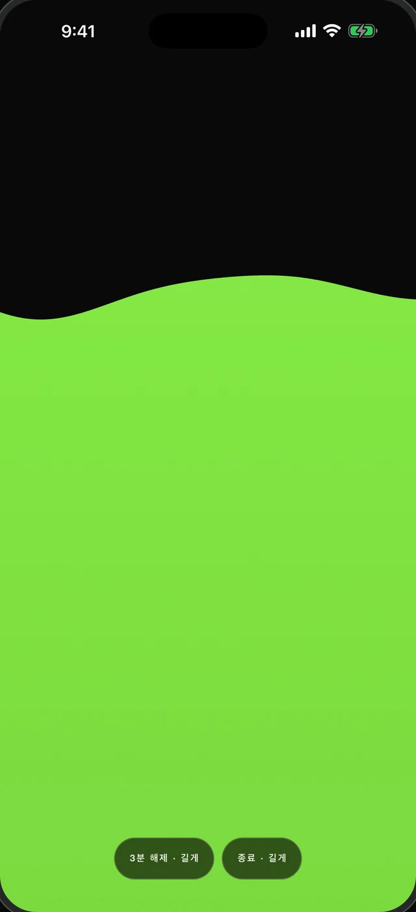
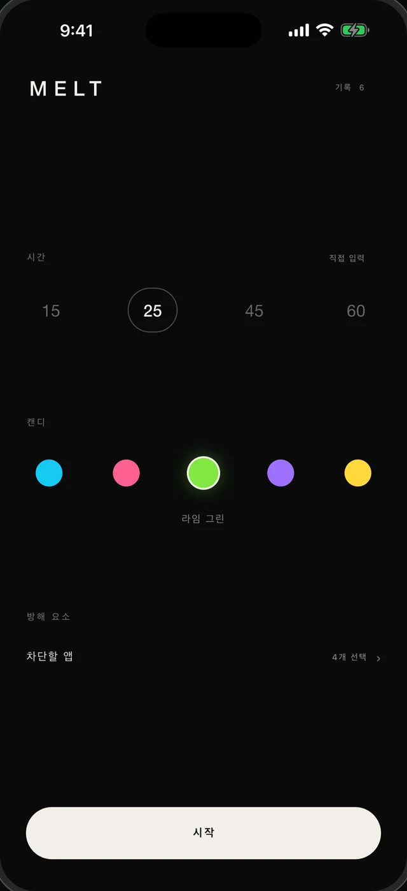
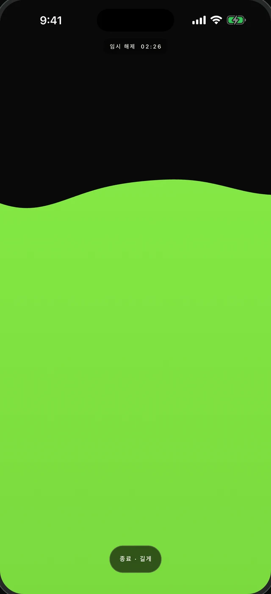
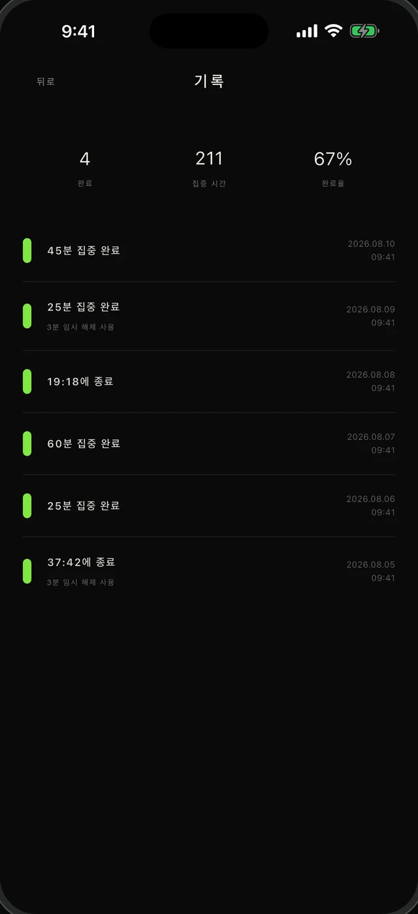
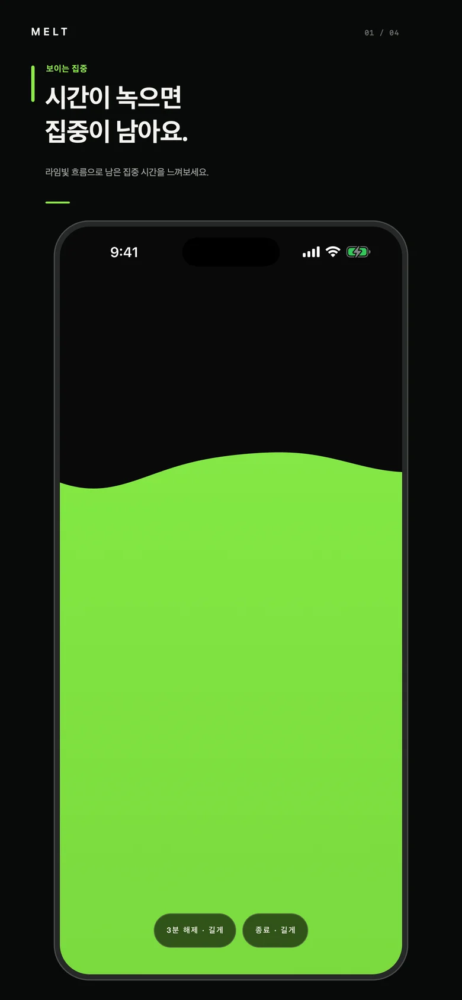
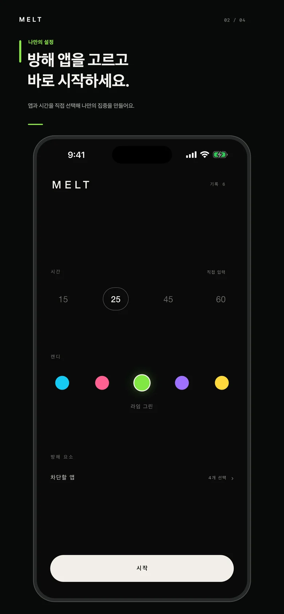
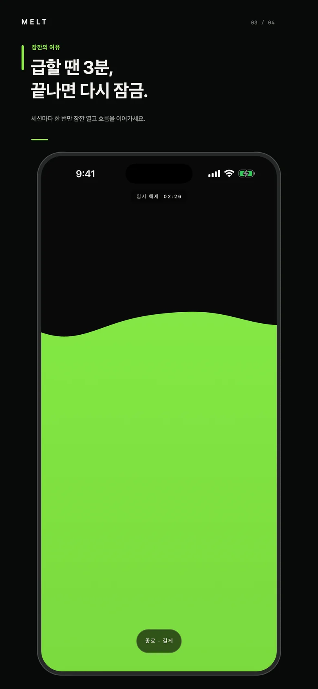
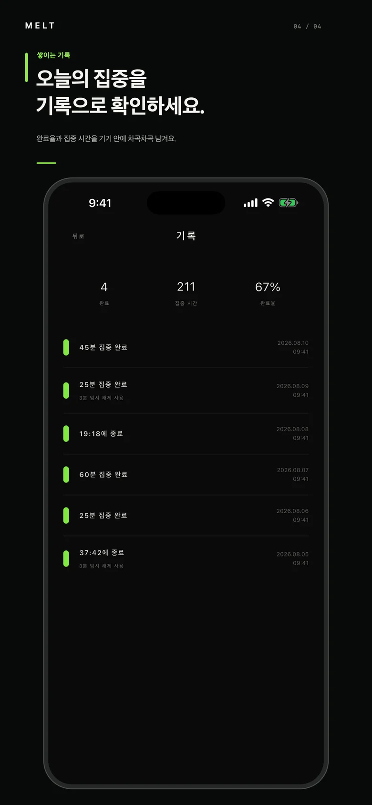
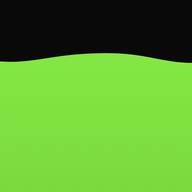

01
보이는 집중
시간이 녹으면 집중이 남아요
숫자 대신 색이 흐릅니다. 전체 화면의 컬러 표면이 위에서 아래로 녹아내리며 남은 시간을 보여줘요. 15 · 25 · 45 · 60분 프리셋, 1분부터 12시간까지 직접 입력도 가능합니다.
iPhone · iPad를 위한 집중 타이머
집중하는 동안 방해 앱을 대신 잠그고,
남은 시간은 화면이 녹아내리며 보여줍니다.

실제 앱 화면 · 시간이 흐르면 이렇게 녹아내려요
01 · 기능
보이는 집중
숫자 대신 색이 흐릅니다. 전체 화면의 컬러 표면이 위에서 아래로 녹아내리며 남은 시간을 보여줘요. 15 · 25 · 45 · 60분 프리셋, 1분부터 12시간까지 직접 입력도 가능합니다.
진짜 차단
Apple Screen Time 시스템 선택기로 차단할 앱·카테고리·웹사이트를 고릅니다. 세션 중에는 iOS가 직접 막아주는 시스템 수준 차단이라 우회할 수 없어요. 집중 색상도 다섯 가지 중에 고를 수 있습니다.

잠깐의 여유
급한 연락이 올까 봐 불안해서 차단 앱을 못 쓰셨나요? MELT는 세션당 한 번, 3분 임시 해제를 드립니다. 앱이 백그라운드에 있어도 3분이 지나면 자동으로 다시 잠겨요.

쌓이는 기록
완료한 세션, 집중 시간, 완료율이 차곡차곡 쌓입니다. 기록은 서버가 아닌 내 기기에만 저장돼요. 계정도, 로그인도 없습니다.

02 · 미리보기




03 · 이용 방법
프리셋을 탭하거나 원하는 시간을 직접 입력해요.
Screen Time 선택기에서 방해 앱을 선택해요. 한 번 고르면 기억돼요.
화면이 전부 녹으면 세션 완료. 기록이 자동으로 남아요.
FAQ
네. Apple의 Screen Time(Family Controls) 기술을 사용해 iOS가 시스템 수준에서 직접 차단합니다. 세션 중 선택한 앱을 열면 시스템 차단 화면이 표시돼요.
세션당 한 번, 3분 임시 해제를 쓸 수 있어요. 3분이 지나면 MELT가 백그라운드에 있어도 자동으로 다시 차단됩니다. 전화 수신은 차단 대상에 넣지 않는 한 영향받지 않아요.
아니요. ₩4,400 한 번 결제하면 끝이에요. 구독, 광고, 인앱결제가 없습니다.
모든 기록은 내 기기에만 저장됩니다(최신 100개). 서버도, 계정도, iCloud 동기화도 없어서 데이터가 기기 밖으로 나가지 않아요.
iOS 16 이상의 iPhone과 iPad에서 사용할 수 있어요. Android 버전은 출시 준비 중입니다.

₩4,400 한 번. 구독 없이 평생.